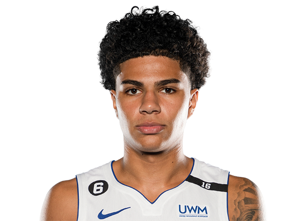

Detroid Pistons

Detroit Pistons so ameriška profesionalna košarkarska ekipa s sedežem v Detroitu. Pistonsi tekmujejo v Nacionalni košarkarski zvezi (NBA) kot član osrednje divizije vzhodne konference lige in igrajo domače tekme v Little Caesars Areni, ki se nahaja v središču Detroita. Leta 1937 so bili ustanovljeni v Fort Waynu v Indiani kot polprofesionalna podjetniška košarkarska ekipa z imenom Fort Wayne Zollner Pistons, leta 1941 pa so postali profesionalci kot člani Nacionalne košarkarske lige (NBL), kjer so osvojili dva prvenstva NBL: leta 1944 in 1945. Pistonsi so se pozneje leta 1948 pridružili Ameriški košarkarski zvezi (BAA). NBL in BAA sta se leta 1949 združili v NBA, Pistonsi pa so postali del združene lige. Leta 1957 se je franšiza preselila v Detroit. Pistonsi so osvojili tri naslove prvaka lige NBA: leta 1989, 1990 in 2004. Fred Zollner je bil lastnik Zollner Corporation, livarne, ki je izdelovala bate, predvsem za motorje avtomobilov, tovornjakov in lokomotiv v Fort Waynu v Indiani. Leta 1937 je Zollner sponzoriral polprofesionalno košarkarsko ekipo podjetja, imenovano Fort Wayne Zollner Pistons, potem ko je prejel prošnjo svojih delavcev. Leta 1941 so Zollner Pistons opustili svoje delovne ekipe in se pridružili nacionalni košarkarski ligi (NBL). Zollner Pistons so bili prvaki NBL v letih 1944 in 1945. Zmagali so tudi na svetovnem profesionalnem košarkarskem turnirju v letih 1944, 1945 in 1946.
Trenutna ekipa

11. marca 2020 je liga NBA prekinila sezono 2019–20, potem ko so poročali, da je bil Rudy Gobert pozitiven na COVID-19. 4. junija 2020 se je sezona za Pistonse končala, ko je svet guvernerjev lige NBA odobril načrt, po katerem bi 31. julija 2020 znova začeli sezono z 22 ekipami, ki bi se vrnile k igranju v mehurčku lige NBA, kar je odobril tudi National Basketball Players Association naslednji dan. Pistonsi so sezono končali z rezultatom 20–46. 18. junija 2020 so Pistonsi najeli Troya Weaverja kot novega generalnega direktorja. Pistonsi so sezono 2020–21 končali z drugim najslabšim rezultatom v ligi pri 20–52 in že drugo sezono zapored niso prišli do končnice. 20 zmag je bilo tudi izenačenih z drugo najmanjšo zmago v takratni zgodovini franšize. Na naboru lige NBA leta 2021 so Pistonsi kot prvi izbrali Cadea Cunninghama. Pistonsi so sezono 2021–2022 končali pri 23–59 in že tretjo zaporedno sezono niso prišli do končnice. Pistonsi so kot peti izbor na naboru lige NBA leta 2022 izbrali Jadena Iveyja. Kasneje v prvem krogu so Pistonsi kupili Jalena Durena prek menjave z New York Knicks. Pistonsi so sezono 2022–2023 končali z najslabšim skupnim rezultatom v ligi NBA in drugim najslabšim v zgodovini franšize pri 17–65. To je bila njihova prva sezona s 60 porazi po letih 1993–94. Po zadnji tekmi sezone 9. aprila 2023 je Dwane Casey odstopil z mesta glavnega trenerja in se pridružil glavni pisarni. 2. junija 2023 so Pistonsi za novega glavnega trenerja najeli Montyja Williamsa [278].